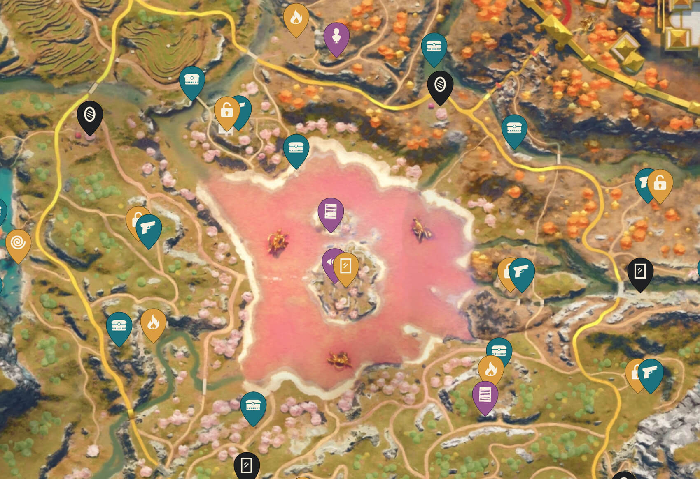
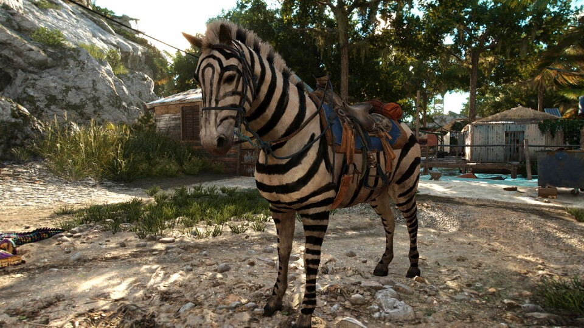

It is the sixth main installment in the Far Cry
series and the successor to 2018's Far Cry 5. The game is set on the
fictional Caribbean island of Yara, ruled as a dictatorship by "El
Presidente" Antón Castillo (portrayed by Giancarlo Esposito) who is
raising his son Diego (Anthony Gonzalez) to follow in his rule. Players
take on the role of guerilla fighter Dani Rojas (voiced by either Nisa
Gunduz or Sean Rey), attempting to topple Castillo and his regime.
Gameplay focuses on combat and exploration; players fight enemy soldiers
and dangerous wildlife using a wide array of weapons and gadgets.

The game
features many elements found in role-playing games, such as a leveling-up
system and side quests. It also features a cooperative multiplayer mode.
Development of Far Cry 6 began around 2016 and was extensive. The team
studied several revolutions of recent history for the game's narrative,
primarily the Cuban Revolution of 1953–1959. The game was designed to be
'political', covering themes such as the rise of fascism in a nation, the
costs of imperialism, and the need for free-and-fair elections, in
response to the controversy generated by Far Cry 5.
 The development team
also sought to bring back several elements from earlier Far Cry titles
such as a tropical setting and a fully-voiced protagonist. The game was
first teased by Esposito in July 2020, and officially announced later that
month, at the Ubisoft Forward online event. Far Cry 6 was released
worldwide for PlayStation 4, PlayStation 5, Stadia, Windows, Xbox One and
Xbox Series X/S on October 7, 2021. It received mixed reviews from
critics, who praised the small improvements brought to the series'
gameplay formula, but criticized its story and lack of innovation. Several
releases of downloadable content were subsequently published, including
three expansion packs centered around antagonists from past Far Cry games.